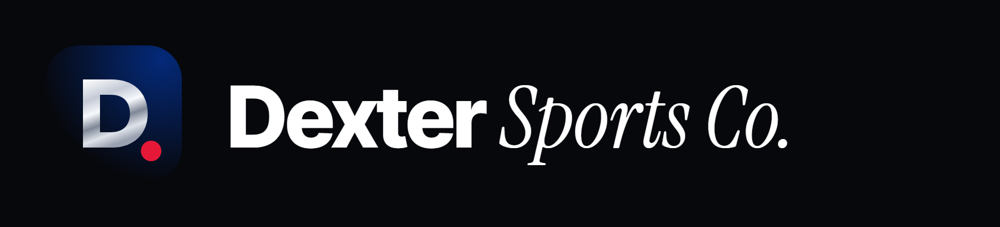
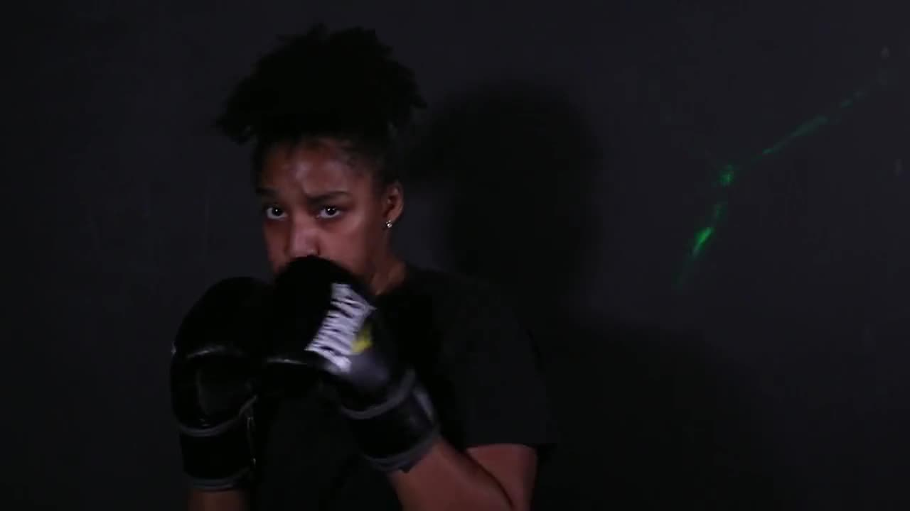

Coach and athlete representation in every sport, with a specialty in uplifting women. Women-owned; headquartered in Charlotte, NC, serving clients nationwide. This guide keeps the website, decks, social posts, and printed pieces consistent.
Taglines: "Protect the talent. Shape the opportunity. Build what lasts." · "Two specialties. One advocate."

logo/dexter-mark.svg · dexter-mark-1024.png
logo/dexter-wordmark-on-dark.svg / .png
logo/dexter-wordmark-on-light.svg / .png
Zip: dexter-logo-files.zip
The mark (Oct 2026) is a liquid-silver "D" on a Night rounded square with a soft blue glow and a Howard-red dot. The wordmark sets "Dexter" in Inter Tight ExtraBold and "Sports Co." in Instrument Serif Italic. The earlier blue-square mark is kept in logo/legacy-blue/. Seven favicon styles, all with the red dot, are in favicons/ (the live one is chrome).
Interim mark. If Kim commissions a professional logo, replace these files and the site's favicon.svg.
Ratio guide: ~60% Night/Paper, ~30% Ink/Sand, ~8% Blue (dominant accent), ~3% Silver, under 1% Howard Red. Alert Red appears only in the urgent-offer flow.
Purpose: a polished, futuristic but classy finish that makes the brand feel premium and distinct from typical agency sites.
Purpose: the signature electric-blue light from the original brand. It sits under the silver as a halo, so chrome buttons, numbers, and headline words glow blue.
Purpose: honors Kim's alma mater, Howard University, where she played Division I volleyball. It reads as a personal signature, not a brand color.
assets/css/styles.css
§8c Liquid silver layer
§8d Howard red accents
tokens: --mercury, --matte, --gunmetal, --howard
assets/js/main.js → redStops() (red headline full stops)
To remove an accent family, delete its section; nothing else depends on it.
| Role | Typeface | Sample |
|---|---|---|
| Headlines | Inter Tight 700–800, tight tracking (−3.5%) | Build what lasts. |
| Accent phrase | Instrument Serif Italic 400 | the coaches the big agencies overlook |
| Body | Inter 400–600 | Representation for coaches and athletes in every sport. |
| Labels | JetBrains Mono 500, uppercase, +8% tracking | 01 / For coaches |
Signature move: end a headline with an italic serif phrase: "Two specialties. One advocate." All four fonts are free from Google Fonts (fonts.google.com). In Word or PowerPoint without them, use Arial Black and Georgia Italic.

Home hero: volleyball series (Pexels #10350257–#10350262, same athlete), crossfading. Feature women of color in real team jerseys and real action.
All stock footage: Pexels License (free commercial use, no attribution required). Sources and IDs: video/README.md
Start a conversation → Read Kim's story → Free NIL toolkit → Urgent offer help →
Primary buttons are matte silver with a blue neon glow. Pill-shaped buttons, an arrow on links, 14 px radius on cards (22 px for large panels), hairline borders. The live component reference is docs/DESIGN-SYSTEM.md.
Use wherever advice-adjacent content appears: "Dexter Sports Management is operated by Dexter Sports Co. LLC. Dexter Sports Co. LLC is not a law firm and does not provide legal, tax, or investment advice."
© Dexter Sports Co. LLC · Charlotte, NC · dextersportsco.com